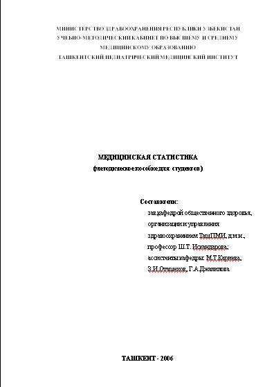

ЋјЅќ–ј“ќ–Ќјя –јЅќ“ј є WRD-01
ќ‘ќ–ћЋ≈Ќ»≈ ƒќ ”ћ≈Ќ“ј
“еоретические сведени€:
- Ќазначение текстового процессора Word.
- —оздание , открытие
и сохранение документа.
- ¬вод и правка текста. опирование и перемещение
фрагментов
- ‘орматирование шрифта:
изменение типа шрифта, его размеров, начертани€
и цвета.
- ‘орматирование абзацев: изменение выравнивани€, абзацных отступов, интервалов между абзацами и междустрочных интервалов.
- »зменение параметров документа: размера и ориентации
страницы, настройка полей документа
«адани€:
- «агрузите документ W-01.doc. —охраните его копию в своей
сетевой папке. »м€ копии Ч Word-01.
- ”становите размер бумаги
Ч A4.
- Ќастройте пол€: верхнее,
правое и нижнее Ч по 2 см, левое Ч 2,5 см.
- ќформите абзацы:
- »справьте грамматические
ошибки в тексте.
- ќформите заголовки параграфов:
- лева€ и права€ границы Ч по пол€м;
- абзацный отступ Ч 0;
- выравнивание Ч по центру;
- шрифт Ч Arial; размер 14 пт, полужирный.
- ѕронумеруйте страницы
документа. ќтформатируйте номера страниц:
- номер страницы расположен снизу, центрирован;
- размер шрифта номера страницы Ч 11 пт.
- номер на первой странице не ставить.
- ќформите титульный лист документа, перенес€ на
него название документа, им€ и данные автора,
название компании в соответствии со следующим
образцом:
